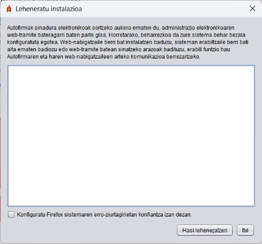

Panel horretatik autofirmaren instalazioa berrezar daiteke, web-nabigatzaileen eta aplikazioaren arteko komunikazioari eragiten dioten arazoak konpontzeko. Kasurik ohikoenak hauek dira: Autofirma instalatu ondoren, web-nabigatzaile berri bat instalatu da, ekipoan erabiltzaile gehiago sortu dira edo nabigatzaile baterako erabiltzaile-profil gehiago sortu dira, erabiltzaile baten profila berrasieratu da, etab.

Aukera hau aktibatzean (Windows-en eta macOS-en bakarrik dago erabilgarri), berrezartze-prozesuak Firefox konfigura dezake, eta, hala, nabigatzaileak sistemaren erro-ziurtagirien biltegian instalatutako ziurtagirietan konfiantza izango du (konfiantzako agintariak). Hala, Autofirmak nabigatzaile horretan funtzionatzen jarraituko du, nahiz eta profil berriak konfiguratu, profila garbitu edo nabigatzailearen biltegiko konfiantza-ziurtagiria ezabatu. Lauki hau desaktibatuta utziz gero, konfigurazio hori ezabatu egingo da, lehendik ezarrita badago.
"Leheneratzen hasi" botoia sakatzean, leheneratze-prozesua hasiko da.
MICROSOFT WINDOWSEN ERABILTZAILEENTZAKO OHARRA: Instalazio-prozesua exekutatzean mezu bat agertuko balitz eta hau adieraziko balu: "Kodearen exekuzioa ezin da jarraitu, ez baitzen aurkitu VCRUNTIME140.dll. Arazo hori programa berriro instalatuz konpon daiteke", Microsoft Visual C++ 2015en egikaritze-ingurune birbanagarria instalatu beharko du eta leheneratzea osatu ahal izateko eragiketa berriz egin beharko du.